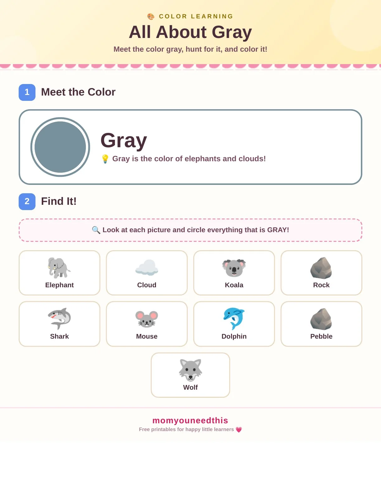

Gray Color Worksheets For Kids Practice Identifying And Naming The Color Gray
Quick Answer
This free printable gray color worksheet helps toddlers and preschoolers learn to identify and name the color gray. Kids find, trace, and color gray objects like elephants and cloudy skies. Gray is the in-between color — black and white mixed — and learning it is a genuine step up: not a bright crayon-box color, but a shade children must slow down to see. Download and print at home with no signup needed — gentle color learning for ages 2 to 4.
Soft as a cloudy sky — these gray worksheets help your child recognize the calm, quiet color gray.
Learn The Color Gray
Gray is the quiet color, and that is its teaching power. Every other worksheet in this set is a color that shouts; gray whispers. It is the color of elephants and rain clouds, of concrete sidewalks and grandma's hair, of the sea on a cloudy day — everywhere, once a child learns to look for it, and nearly invisible before.
This worksheet builds gray deliberately: gray-object hunts, tracing the word gray, and coloring activities, with the dark-to-light idea running through it. Gray is made by mixing black and white, so this page doubles as a first lesson in shades — more black makes darker gray, more white makes lighter — a dial children can picture even before they can turn it.

🖨️ Download Your Free Gray Color Printable
Print it out, grab the crayons, and you're ready — no signup needed.
⬇️ Download Free Printable 🖨️ Print(opens in new tab)🎁 Free printable for toddlers & preschoolers
🔍 Compare Gray, Black And White
Line up black, gray, and white crayons from dark to light. Ordering the three teaches shades in a way toddlers can see and touch — the gray crayon sits in the middle like a step between two ends.
Extend the line with more grays if your crayon box has them (many do: light gray, dark gray, silver-ish pencils) and let your child arrange the staircase. Then hunt the real staircase outdoors: pale clouds, darker clouds, the darkest rain cloud of all. The sky performs the whole gray scale on any cloudy day, free of charge.
💡 Why Learn Colors One At A Time?
Gray introduces the in-between — not black, not white. Understanding middle shades is a big cognitive step that sharpens color perception across every other color, because a child who can see gray can start seeing light red (pink), dark blue (navy), and light brown as relatives rather than strangers.
Learning colors one at a time matters most for gray: taught beside black and white too early, it blurs into both. Taught on its own, with the mixing story (black + white = gray) attached, it becomes the color that explains how shades are made — knowledge your child will use on every color page that follows.
📚 Keep Exploring
Discover more free color activities, printables, and learning ideas created for busy parents.
🎁 Back to Color Identification🐘 All About Gray — The In-Between Color
Gray is made, not found in the rainbow: mix black and white and gray is what you get, in any depth you like. That makes gray the first color whose recipe a child can fully understand, and the doorway to every shade conversation — tints, tones, light and dark versions of all the bright colors.
Gray's animal kingdom is distinguished: elephants, koalas, dolphins, donkeys, mice, pigeons, and gray wolves all wear it, usually as camouflage or understatement. Its weather is famous too — a gray sky promises rain, fog is gray you can walk through, and the sea turns gray under clouds even though it was blue at breakfast. Gray is the color of “it depends on the light,” which is a sophisticated and true thing for a preschooler to absorb.
A game gray is made for: the shade staircase. Collect gray things — a stone, a sock, a crayon, a photo of an elephant — and order them lightest to darkest. Disagreements are the point: two grays side by side force the closest looking a color activity can ask for.
❓ Frequently Asked Questions
What is on the gray color worksheet?
Gray-object hunts, tracing the word gray, and coloring — everything about the color gray. Kids practice with elephants, cloudy skies, and the dark-to-light shade staircase gray is famous for. Kids practice with elephants, cloudy skies, and the dark-to-light shade staircase gray is famous for.
Are these color worksheets really free?
Yes — every printable on MomYouNeedThis is 100% free to download and print. No signup, no payment, just tap the download button. Gray prints perfectly in black and white (fittingly), and it pairs with the black worksheet for a contrast-and-shades session. Gray prints perfectly in black and white (fittingly), and it pairs with the black worksheet for a contrast-and-shades session.
Grey or gray — which spelling?
They can point to gray objects when asked and name the color gray without prompting — and the real mastery sign is placement: given black, white, and gray, they put gray in the middle and can say why. A child who can also spot that one gray is darker than another has shade perception, the skill this page exists to build.
💜 More Color Fun You'll Love
Keep the color learning going with these related activities.
⚫ Black Color ⚪ White Color 🟤 Brown Color